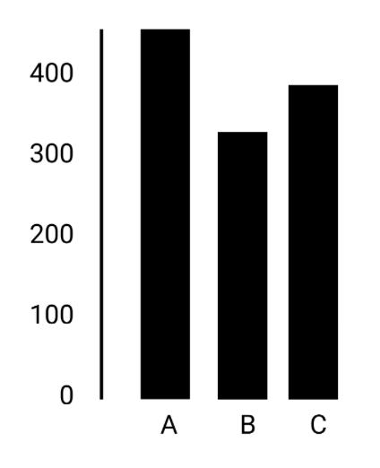
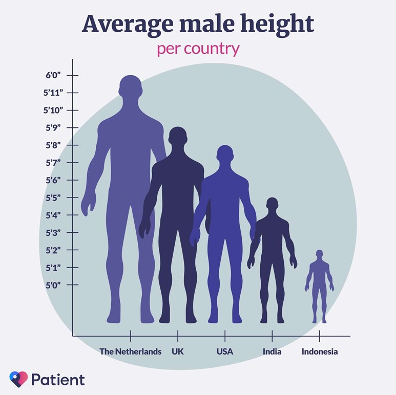
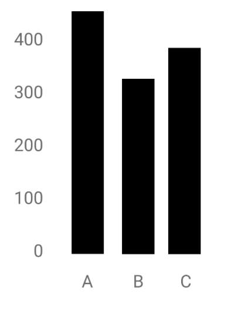
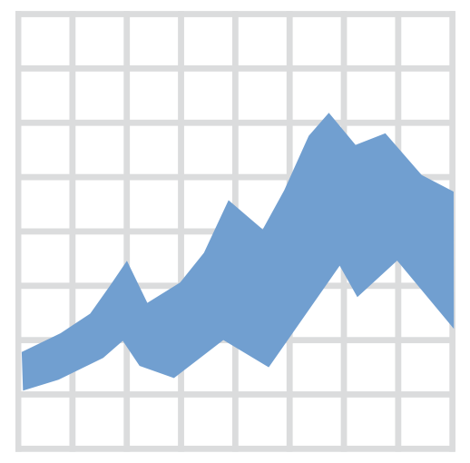
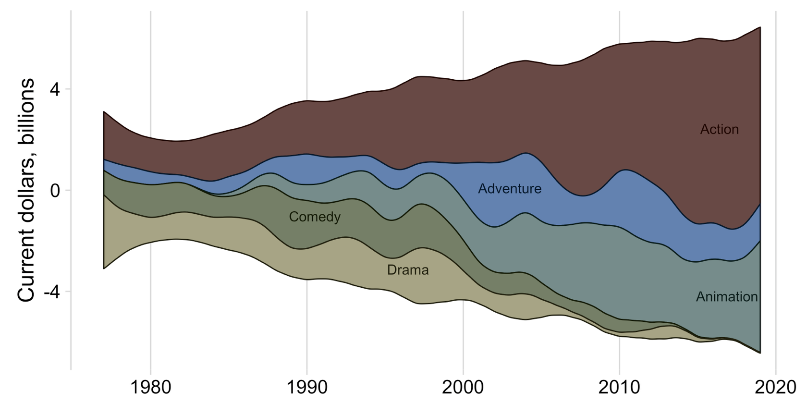
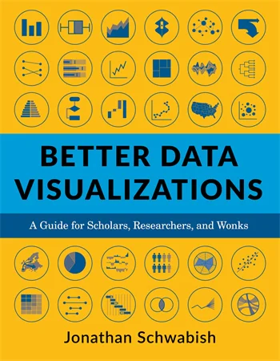

The Grammar of Graphics
Die frühen Stars der Datenvisualisierung

William Playfair (1759-1823)

John Snow (1813-1858)


Florence Nightingale (1820-1910)

Charles Joseph Minard (1781-1870)

W.E.B. Du Bois (1868-1963)


Otto Neurath (1882-1945)

Fünf Prinzipien für bessere Visualisierungen

1. Wähle eine adequate Darstellungsform
Nein:
OK:
OK:

- Wähle den Grafik-Typ anhand der abzubildenden Daten: Welches Skalenniveau haben die Daten?
- Was soll abgebildet werden: Vergleich, Verteilung, Zusammensetzung, Beziehung?
- Um den passenden Grafik-Typ aus einer Vielzahl unterschiedlicher Arten zu finden, helfen Hompages wie https://www.data-to-viz.com oder https://datavizproject.com
Ein einfacher Entscheidungsbaum von Darstellungsformen

2. Visualisiere die Daten sorgfältig und gewissenhaft
Nein: 
OK: 
- Lege Priorität auf Genauigkeit, Klarheit und Integrität
- Vermeide irreführende Praktiken wie Abschneiden von Achsen, Verwenden sekundärer Achsen, unlautere Auswahl von Daten, mangelnde Kontextualisierung, etc.
- Eine gute Datenvisualisierung verzichtet auf irreführende Manipulation der Daten oder von einzelnen Grafikelementen!
Beispiel


Noch ein Beispiel


Und noch ein drittes Beispiel


3. Integriere Text sinnvoll in die Grafik
Nein: 
OK: 
- Vermeide, dass Leser:innen ihren Kopf drehen müssen um die Bezeichnungen zu lesen
- Überlege eine logische Reihung der Grafik (alphabetisch, nach Werten, etc.)
- Direkte Bezeichnung ist besser als eine Legende
- Wähle sinnvolle Titel, die auf die Botschaft fokussieren
Musterbeispiel

4. Reduziere Ablenkungen
Nein: 
OK: 
- Unnötige visuelle Elemente lenken die Aufmerksamkeit weg von den wichtigen Daten
- Vermeide grafische Elemente, die keine Information transportieren
- Bestandteile wie etwa Achsen-Teilstriche oder Gitternetzlinien sollten entfernt oder zumindest reduziert werden
- Überlege sorgsam, welche visuellen Elemente wirklich nötig für das Lesen der Grafik sind
Musterbeispiel


5. Vermeide die Spaghetti-Grafik und starte in Grautönen
Nein:
OK:

OK:

- Wenn die Grafik zu viel Information transportiert, sieht sie aus wie Spaghetti
- Versuche überladene Grafiken in kleinere Bestandteile aufzuteilen (Facets, small multiples) oder hebe die relevante Information hervor
- Beginne mit Grautönen: das erfordert den strategischen Einsatz von Farben, Labels, etc.
Musterbeispiel


Vermögensverteilung

European Rich List Database (ERLDB) und HFCS

Selected geometries in {ggplot}
| Geometry | Explanation | |
|---|---|---|
|  | area, ribbon | An area plot is the continuous analogue of a stacked bar chart. |
| bar, col | Bar charts may be proportional (bar) or with absolute values (col). | |
| boxplot | The boxplot compactly displays the distribution of a continuous variable. | |
| density, histogram | Kernel density plot, which is a smoothed version of the histogram. | |
| hline, vline, abline | Draws a horizontal or vertical line with an intercept or a line with a slope. | |
| line, path | Line between observations in order of variable (line) or appearance (path) | |
| linerange, errorbar | Various ways of representing a vertical interval defined by x, ymin and ymax. | |
| point, jitter | The point geom is used to create scatterplots and jitter avoids overplotting. | |
| segment, curve | Draws a straight or curved line between points (x,y) and (xend, yend). | |
| smooth | Smoothed line with standard error bounds across a scatterplot. | |
| violin | A violin plot is a compact display of a continuous distribution. |
Additional geometries
ggstream::geom_stream() 
waffle::geom_waffle() 
ggchicklet::geom_chicklet() 
ggridges::geom_density_ridges() 
ggsankey::geom_sankey()
ggbump::geom_bump() 
First steps

Colors

Scales
data |> ggplot(aes(x = bill_length_mm,
y = bill_depth_mm,
color = species)) +
geom_point(size = 1.5, alpha = 0.5) +
scale_color_manual(values = MetBrewer::met.brewer("Lakota")) +
scale_x_continuous(limits = c(30,60), breaks = seq(30,60,10)) +
scale_y_continuous(limits = c(12,21), breaks = seq(12,21,3)) +
theme_minimal()
Labels
data |> ggplot(aes(x = bill_length_mm,
y = bill_depth_mm,
color = species)) +
geom_point(size = 1.5, alpha = 0.5) +
scale_color_manual(values = MetBrewer::met.brewer("Lakota")) +
scale_x_continuous(limits = c(30,60), breaks = seq(30,60,10)) +
scale_y_continuous(limits = c(12,21), breaks = seq(12,21,3)) +
labs(x = "Bill length (in mm)", y = "Bill depth (in mm)",
title = "Penguins are awesome",
subtitle = "Depth and length of bills") +
theme_minimal()
Annotation rather than legend
data |> ggplot(aes(x = bill_length_mm,
y = bill_depth_mm,
color = species)) +
geom_point(size = 1.5, alpha = 0.5) +
scale_color_manual(values = MetBrewer::met.brewer("Lakota")) +
scale_x_continuous(limits = c(30,60), breaks = seq(30,60,10)) +
scale_y_continuous(limits = c(12,21), breaks = seq(12,21,3)) +
annotate("text", x = c(34.7, 55.7, 50.7), y = c(20.7, 19, 13.6),
color = MetBrewer::met.brewer("Lakota")[1:3],
label = c("Adélie","Chinstrap","Gentoo"), fontface = "bold", size = 4) +
labs(x = "Bill length (in mm)", y = "Bill depth (in mm)",
title = "Penguins are awesome",
subtitle = "Depth and length of bills") +
theme_minimal() +
theme(legend.position = "none")
Themes
data |> ggplot(aes(x = bill_length_mm,
y = bill_depth_mm,
color = species)) +
geom_point(size = 1.5, alpha = 0.5) +
scale_color_manual(values = MetBrewer::met.brewer("Lakota")) +
scale_x_continuous(limits = c(30,60), breaks = seq(30,60,10)) +
scale_y_continuous(limits = c(12,21), breaks = seq(12,21,3)) +
annotate("text", x = c(34.7, 55.7, 50.7), y = c(20.7, 19, 13.6),
color = MetBrewer::met.brewer("Lakota")[1:3],
label = c("Adélie","Chinstrap","Gentoo"), fontface = "bold", size = 4) +
labs(x = "Bill length (in mm)", y = "Bill depth (in mm)",
title = "Penguins are awesome",
subtitle = "Depth and length of bills") +
theme_minimal() +
theme(legend.position = "none",
plot.title.position = "plot",
plot.title = element_text(size = 16, face="bold"),
plot.subtitle = element_text(size = 13),
panel.grid.minor = element_blank())
Weiterführende Literatur
|  | Jonathan Schwabish Better Data Visualizations: A Guide for Scholars, Researchers, and Wonks Columbia University Press ISBN-13: 9780231193115 |
 |
David Spiegelhalter The Art of Statistics: Learning from Data Penguin Books UK ISBN-13: 9780241258767 |
Online Bücher
 |
Kieran Healy Data Visualization: A Practical Introduction Princeton University Press ISBN-13: 9780691181622 Link |
 |
Claus O. Wilke Fundamentals of Data Visualization: A Primer on Making Informative and Compelling Figures O’Reilly Media ISBN-13: 9781492031086 Link |
 |
Jack Dougherty and Ilya Ilyankou Hands-On Data Visualization: Interactive Storytelling from Spreadsheets to Code O’Reilly Media ISBN-13: 9781492086000 Link |